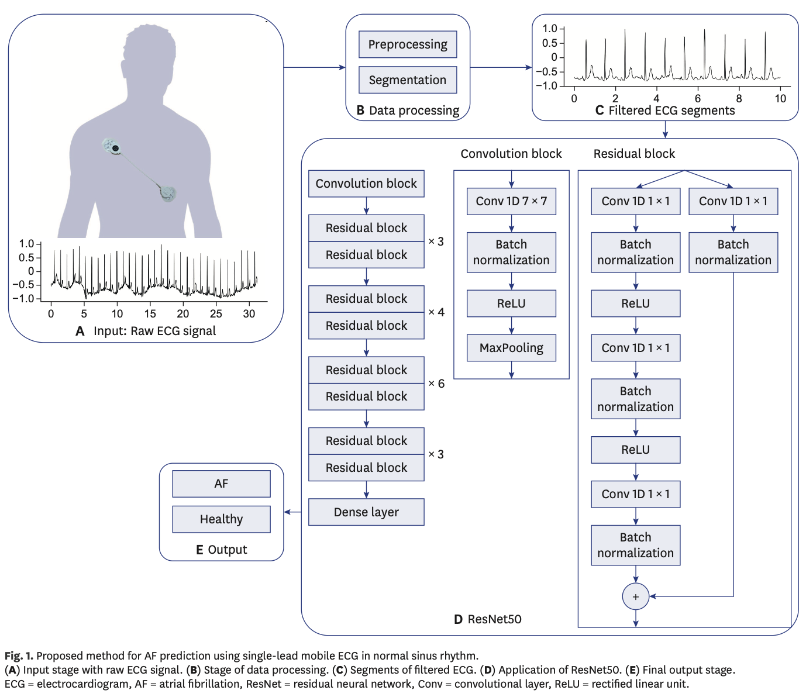

01 / OVERVIEW

Fig. 1 from Kim J, et al. J Korean Med Sci. 2024;39(5):e56 (CC BY-NC 4.0)
02 / PROBLEM & GOAL
조기 발견의 한계와 연구 목표
- 심방세동(AF)은 색전성 뇌졸중의 주요 원인이며, 합병증을 막으려면 조기 발견이 중요합니다.
- AF는 발작성이거나 증상이 없는 경우가 많아, 증상이 나타나기 전에 찾아내기 어렵습니다.
- 12-lead ECG는 일시적인 부정맥을 포착하는 데 한계가 있고, Holter 모니터는 장시간 착용 부담이 큽니다.
- 단일 리드 모바일 ECG는 장기간 편하게 측정할 수 있지만, 정상 동리듬 상태에서 AF를 식별하는 연구는 부족했습니다.
Goal. 정상 동리듬일 때 측정한 단일 리드 모바일 ECG에서, 사람 눈으로는 구분하기 어려운 AF의 미세한 특징을 딥러닝으로 식별할 수 있는지 검증합니다.
03 / DATA & METHOD
데이터 구성과 모델링 방법
Raw ECG256 Hz · 약 60초
→
PreprocessingPQRST 검출 · 0.5 Hz high-pass
→
Segmentation10초 단위
→
Under-sampling클래스 불균형 보정
→
ModelResNet50 · RNN · LSTM
→
OutputAF / Healthy
- Collection
- 전남대학교병원 순환기내과·신경과 방문/입원 환자의 모바일 ECG(mobiCARE MC100)를 2021.07~2022.12 동안 전향적으로 수집. 모든 ECG는 임상 전문가가 진단·라벨링 (IRB 승인)
- Label
- AF 이력(12-lead ECG에서 AF가 1회 이상 기록된 환자)의 NSR ECG는 “AF”, 그 외는 “Healthy”. AF·비동리듬·정보 누락·AF 절제술 환자 ECG는 제외
- Imbalance
- Healthy 세그먼트 38,760개를 무작위 제외(random under-sampling) → AF 15,157 · Healthy 16,610
- Split
- Train 19,060 · Internal validation 6,353 · Test 6,354 (6:2:2)
- Training
- AdamW, learning rate 0.0001, batch size 32, 최대 50 epoch (12 epoch에서 early stopping), Cross-entropy loss. Python 3.9 · PyTorch 2.0.1 · RTX 3090 Ti
- Models
- 1D ResNet50을 주 모델로 사용하고, 시계열 모델인 RNN과 LSTM을 비교 대상으로 평가
04 / RESULTS
모델별 성능 비교 및 검증
Test set 기준
| Model | F1-score | Recall | Precision | Accuracy | AUC |
|---|---|---|---|---|---|
| ResNet50 | 71.9% | 79.3% | 65.8% | 70.5% | 0.79 |
| LSTM | 62.2% | 53.7% | 73.8% | 68.8% | 0.75 |
| RNN | 59.5% | 50.1% | 73.1% | 67.4% | 0.74 |
External set 기준(동일 기기, 72시간 Holter)
| Model | F1-score | Recall | Precision | Accuracy | AUC |
|---|---|---|---|---|---|
| ResNet50 | 64.1% | 68.9% | 60.0% | 63.4% | 0.68 |
- Limits
- 외부 검증에서 성능이 내부보다 낮았고, 전향적 검증은 아직 진행 중입니다. 임상 적용을 위해서는 추가 연구가 필요합니다.
05 / PUBLICATION
Identification of Atrial Fibrillation With Single-Lead Mobile ECG During Normal Sinus Rhythm Using Deep Learning
- Journal
- Journal of Korean Medical Science (JKMS), 2024 Feb 5;39(5):e56
- Authorship
- Co-First Author (Jiwoong Kim, Sun Jung Lee)
- Contribution
- 개념 설계 · 데이터 정리 · 방법론 · 모델 구현 · 분석 · 시각화 · 논문 초안 작성